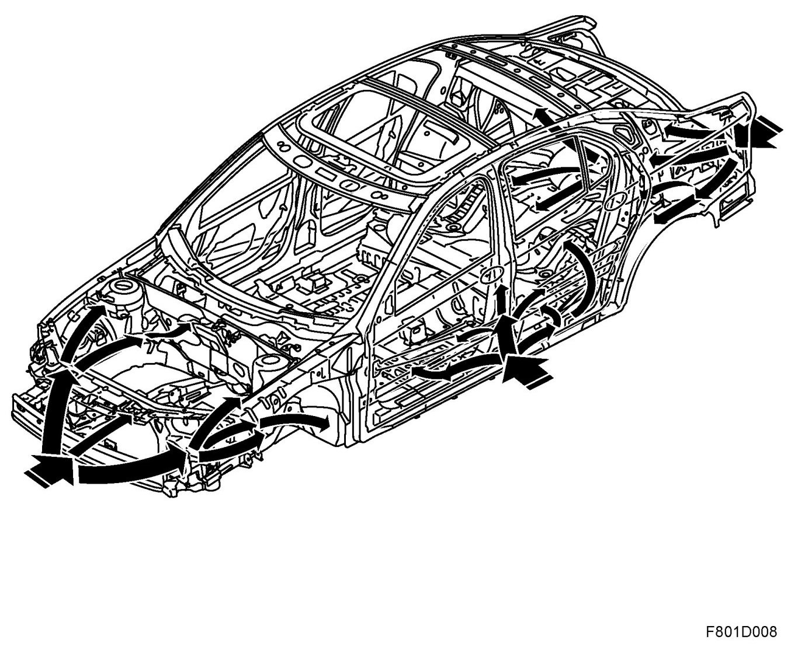
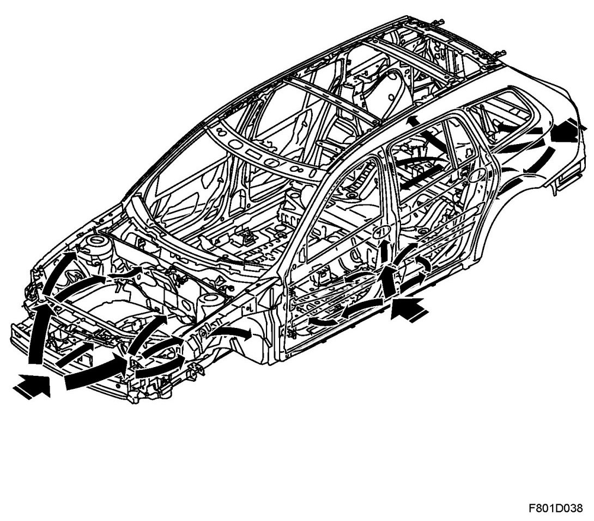
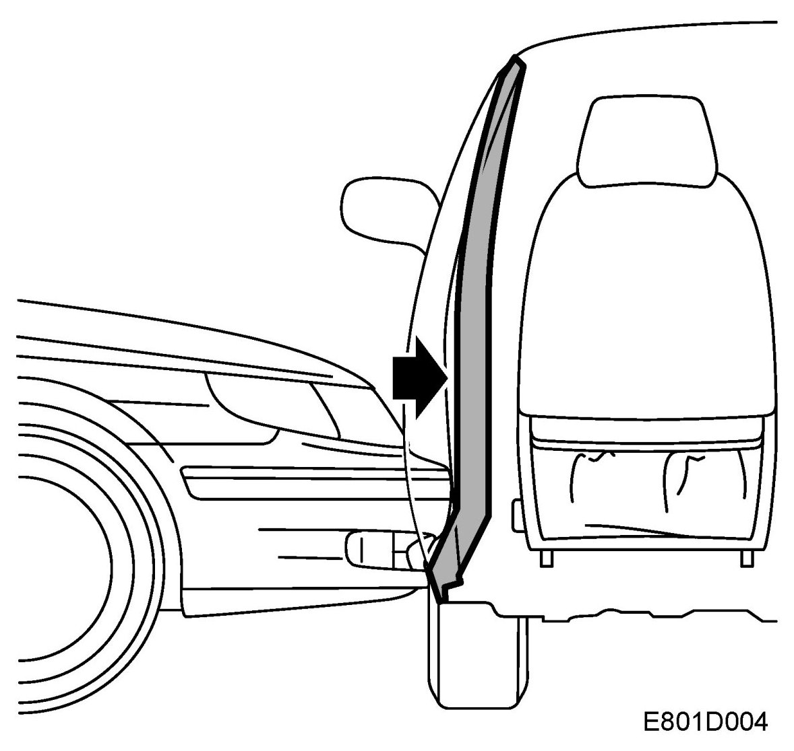

Impact Safety, 4D, 5D
Impact Safety, 4D, 5D
4D

5D

The forces generated during different types of collisions are absorbed by the body deformation zones and the member system of the cabin enclosure.
The body of the Saab 9-3 Sport Sedan is designed to create a survival zone for the driver and all passengers in the event of a collision. The basic intention is that in a collision the deformation zones reduce load peaks by absorbing energy and that the loadings are spread as evenly as possible throughout the members of the cabin framework.
The large front deformation zones are designed to create stable and robust deformation characteristics. The central member distributes the force to a large surface. The front structure has three load routes per side. These load routes are linked together via crossmembers to distribute the force.

The most important component in the event of a side impact is the B-pillar, which is designed to make use of the "pendulum effect". The B-pillar is extremely stiff in the middle and slightly softer in its upper and lower sections. This results in the B-pillar acting as a pendulum and distributing forces via the sill into the car. The front doors have angled door members that direct the forces into the B-pillar and intensify the pendulum effect. Because of the powerful design of the B-pillar and the pendulum effect, a greater portion of the force is directed towards the lower midsection of the body instead of the softer areas at chest height.
It is of great importance that the characteristics of the energy-absorbing deformation zones and the stabile cabin enclosure are not impaired or changed if the body is repaired. The cabin enclosure must never be weaker after a repair. At the same time, the deformation zones must never be made stronger than they were before the damage was done. If the front or rear is too strong, it will intensify the forces instead of retarding them, which, in turn, will increase the strain on the passengers.
IMPORTANT: In order for Saab Automobile AB to accept responsibility and guarantee that the high level of impact safety has been maintained after a repair, it is of vital importance that work is performed correctly with the right material.
Side impact protection in the doors
The door's impact member is made of HSS steel and absorbs part of the forces in a side impact.